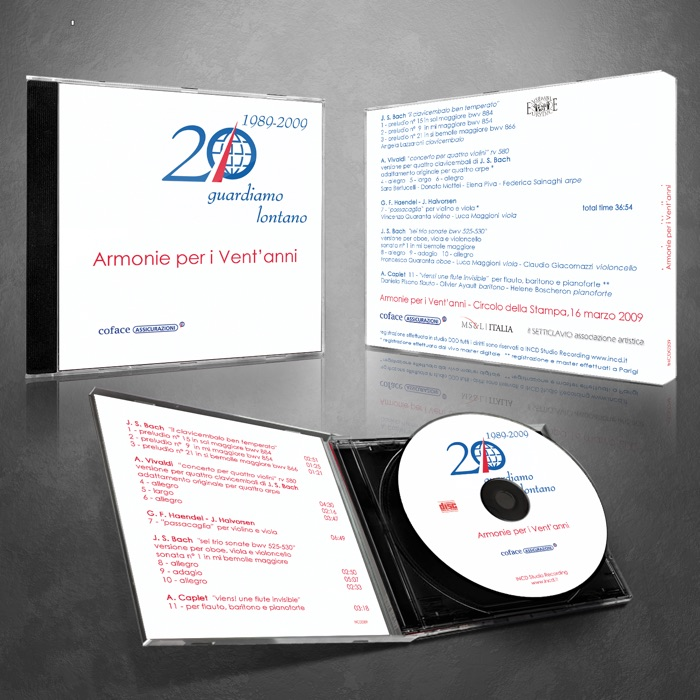
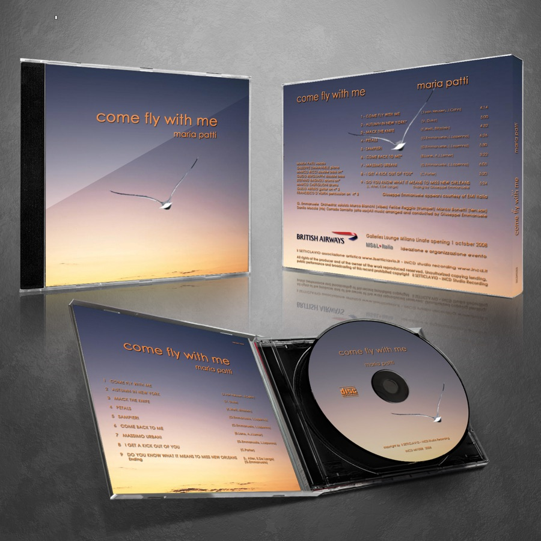
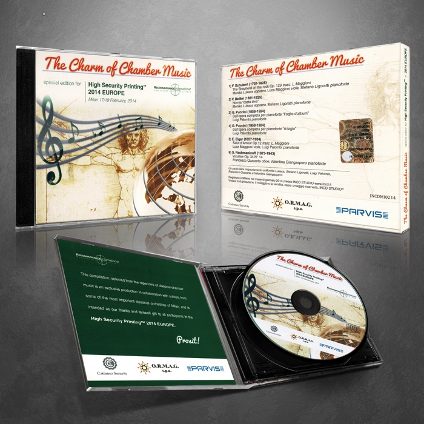
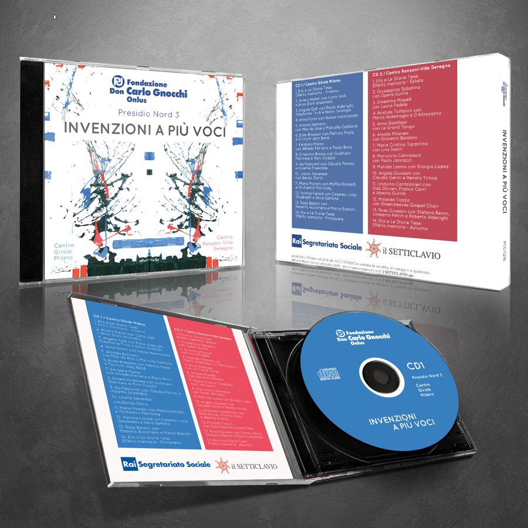

Coface · 2009
Per i vent'anni di Coface: un concerto al Circolo della Stampa di Milano e il CD Armonie per i Vent'anni.
INCD STUDIO › Servizi › Musica per aziende
Progettiamo e realizziamo progetti musicali personalizzati per aziende, brand, enti e fondazioni: CD aziendali da regalare a clienti e collaboratori, musica dal vivo per convention e cene di gala, colonne sonore, jingle e iniziative solidali.
Un unico interlocutore segue ogni progetto dall'idea alla realizzazione, coordinando le competenze artistiche, musicali e tecniche, dalla scelta dei musicisti alla registrazione, dalla grafica alla stampa e alla consegna del prodotto finale.

Per i vent'anni di Coface: un concerto al Circolo della Stampa di Milano e il CD Armonie per i Vent'anni.

Il CD Come Fly with Me, standard jazz arrangiati per l'apertura della Galleries Lounge di Milano Linate.

Musica dal vivo durante la cena di gala, con repertorio e interpreti scelti per l'occasione.

Il CD The Charm of Chamber Music, in edizione speciale per l'evento High Security Printing Europe.

Il doppio CD Invenzioni a più voci con i Centri Girola e Ronzoni Villa, insieme a Rai Segretariato Sociale.
Tra le realtà con cui abbiamo collaborato: British Airways, Coface, Spencer Stuart, ACTN1 (Milano Fashion Week), Lloyd Italico, Fondazione Don Carlo Gnocchi, Cordenons e Carano 4 Children.
Sì. Progettiamo CD con musica scelta o composta per l'occasione, grafica e confezione personalizzate con il marchio dell'azienda, curando registrazione, stampa e consegna. Lo abbiamo fatto, tra gli altri, per Coface, British Airways e High Security Printing Europe.
Sì. Proponiamo il repertorio e gli interpreti più adatti all'occasione, dal solista all'ensemble, e coordiniamo gli aspetti tecnici, compreso il service audio quando necessario. Abbiamo curato interventi musicali, tra gli altri, per la Azimut Convention e per le sfilate ACT N°1 alla Milano Fashion Week.
Certamente. La consulenza è parte integrante del nostro lavoro. Partiamo dalle esigenze dell'azienda e dagli obiettivi dell'iniziativa per individuare insieme la soluzione più adatta: un CD personalizzato, un evento musicale, una colonna sonora, un progetto discografico o un'iniziativa speciale.
Ogni progetto è diverso: il costo dipende dal tipo di intervento, dal numero di musicisti, dalla durata e dalle caratteristiche della produzione. Dopo un primo confronto ti inviamo una proposta personalizzata con un preventivo dettagliato, senza impegno.
Per un evento dal vivo bastano di solito alcune settimane; per un CD personalizzato, tra composizione o scelta dei brani, registrazione e stampa, conviene partire almeno due o tre mesi prima della data di consegna. Per progetti più articolati è consigliabile confrontarsi con maggiore anticipo.
Scrivi a info@incd.it, chiamaci o contattaci su WhatsApp al +39 320 436 4489, indicando l'occasione, la data, il numero di persone coinvolte e, se disponibile, un budget indicativo. Ti risponderemo per approfondire le esigenze e formulare una proposta su misura.
Hai un'idea musicale, un progetto da realizzare o semplicemente bisogno di un confronto? Parliamone.
Dalla consulenza alla produzione completa, fino alla realizzazione di singoli interventi, mettiamo a disposizione le nostre competenze per individuare le soluzioni più adatte e dare forma alle tue idee.
INCD Studio: competenza, esperienza e passione al servizio della musica.